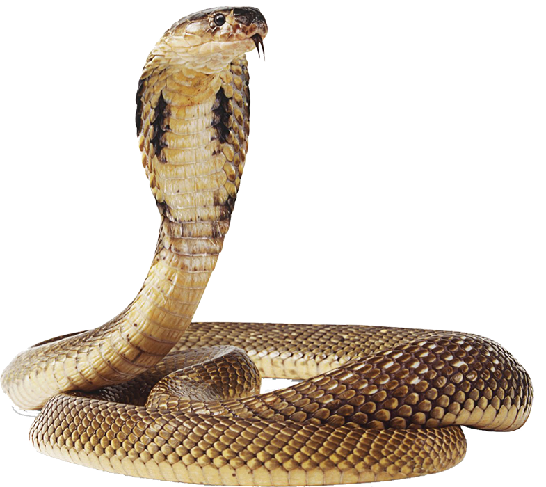
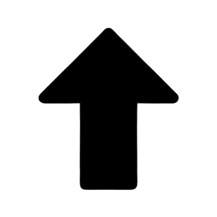

הקוברה הצהובה (Naja nivea) הוגדרה לראשונה על ידי הזואולוג השוודי קארל לינאוס בשנת 1758. השם הגנרי naja הוא לטיניזציה של המילה הסנסקריט "נאגה" (nāgá) שמשמעותה "קוברה". הכינוי המדויק nivea מקורו מהמילים הלטיניות nivis או nix שמשמעותן "מושלג" או "שלג". הקישור לשלג הוא מעורפל, אך הצעה לכך היא בשינוי הצבעים בפרטים הראשונים שנשמרו והתקבלו על ידי טקסונומים באירופה.
הקוברה הצהובה הוא מין במשפחת הפתניים. לינאוס תיאר את הקוברה הצהובה (Naja nivea) לראשונה בשנת 1758. בתחילה הוא נתן לו את השם הבינומיאלי Coluber niveus, אך לאחר עשור ג'וספוס ניקולאוס לאורנטי תיאר את הסוג בשם "Naja". בשנת 2007 ווסטר ונוספים הפרידו את הסוג Naja לארבעה תתי סוגים נפרדים על בסיס קריטריונים שונים כמו שושלת יוחסין, מורפולוגיה ותזונה. הם שמו את Naja nivea תחת תת-הסוג Uraeus, הקוברות האפריקאיות שאינן יורקות, יחד עם הקוברה המצרית, הקוברה החוטמנית, קוברת אחיטה, הקוברה הערבית והקוברה הסנגלית.
הקוברה הצהובה היא אנדמית לאזור אפריקה הדרומית. בדרום אפריקה, איפה שתפוצתו היא הגבוהה ביותר, נמצא בעיקר באזורי הכף המערבי, הכף הצפוני, הכף המזרחי, פרוביציית המדינה החופשית והפרובינציה הצפון מערבית. הוא נמצא גם בחציה הדרומי של נמיביה, דרום מערב בוטסואנה ומערב לסוטו.  אף על פי שלקוברה הצהובה יש מרחב מחיה גאוגרפי קטן יותר מאשר לקוברות אפריקאיות אחרות, מגוון מרחבי המחיה שלו גדול יותר. מרחבי המחיה המועדפים עליו הם פינבו, בושוואלד, קארו, סוואנה צחיחה, מדבר נמיב ומדבר הקלאהרי. שוכן בדרך כלל במחפרות של מכרסמים, תלים נטושים של טרמיטים, ובאזורים צחיחים גם בחריצי סלע. באזורים ממוזגים ובאזורים צחיחים, לפעמים נמצאים גם באזורי נחלים, בשטחים פתוחים ומנוקזים היטב. בלסוטו, ייתכן וימצאו אף בגובה של 2,500 מטרים מעל פני הים. הם נמצאים באזורים מיוערים ובאזורי מרעה גבוה בפרוביציית המדינה החופשית, באזורים סלעיים באזור כף התקווה הטובה ובאזורים המדבריים והחצי מדבריים באזורי המחיה שלהם. הם לפעמים נכנסים לאזורים מאוכלסים, פרברבים מפותחים חלקית ואוכלוסיות קטנות אחרות לטובת בריחת מהחום וחיפוש אחר טרף כמו מכרסמים. דבר זה גורם לעיתים לקשר ישיר מול האדם.
